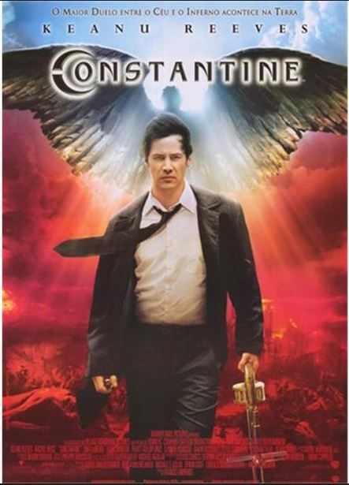

Constantine

- Release date : February 18th, 2005
- Run time : 2 hours, 1 minutes
- Rating: R
Constantine begins with the death of Isabel Dodson. Her death is labeled a suicide, but her sister, NYPD Policewoman Angela Dodson knew her sister was a devout Catholic and would never end her own life. Suspecting something sinister, she ends up on the doorstep of John Constantine, a demon hunter and exorcist. The ensuing chaos threatens all of humanity, and it takes Constantine to hell and back to save the day.
Josh's notes: This is a sleeper of a movie in my opinion. This was made before the big DCEU was made in the Wild West days of movie production. This period created Green Lantern, which gave a bad rap to all other DC movies of this period. However, an interesting character like Constantine coupled with Keanu's representation of the character makes this a very good movie at the end of the day. Overall an 8.5/10 movie.